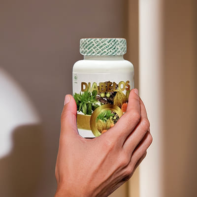
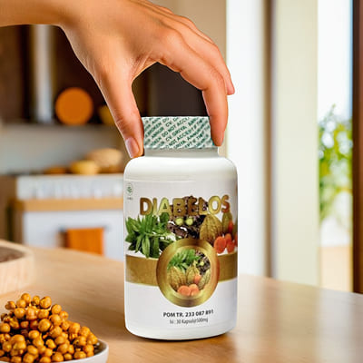
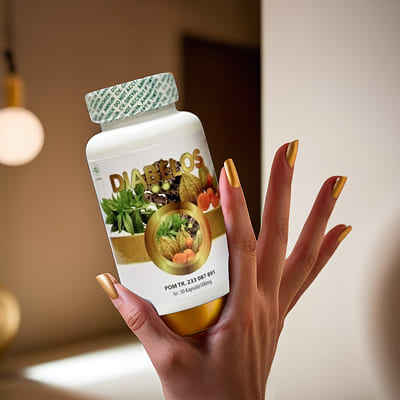
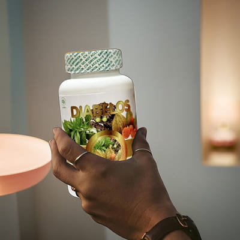

Diabetes bukan lagi hukuman: metode pengobatan baru yang disembunyikan dari Anda!

Dr. Selina Anwar – berasal dari Indonesia, salah satu ahli endokrinologi yang paling dihormati di Asia Tenggara. Selama 22 tahun, ia telah membantu orang berjuang melawan diabetes, mengembangkan metode pengobatan inovatif, dan melakukan penelitian ilmiah.
Namun bagi Dr. Selina, perjuangan melawan diabetes bukan hanya pekerjaan, itu adalah misi pribadi.
Saat masih menjadi mahasiswa, ibunya jatuh sakit karena diabetes. Obat-obatan biasa tidak membantu, para dokter hanya mengangkat bahu, dan kondisi ibunya semakin buruk. Saat itu, Selina bersumpah akan menemukan cara untuk mengalahkan diabetes.
Setelah lulus dari universitas kedokteran di Jakarta, dia magang di Jerman dan Inggris, bekerja di pusat endokrinologi terbesar di Asia dan Eropa, mempertahankan disertasi doktoralnya, dan menjadi penulis lebih dari 40 publikasi ilmiah. Penelitiannya di bidang diabetologi membawanya meraih penghargaan dari Asosiasi Endokrinolog Internasional.
Saat ini, pasien-pasiennya adalah orang-orang yang telah kehilangan harapan untuk sembuh. Mereka datang padanya setelah bertahun-tahun menjalani pengobatan yang tidak berhasil, dan dia membantu mereka mengendalikan kadar gula mereka tanpa diet ketat, suntikan, atau efek samping.
Dalam wawancara eksklusif, Dr. Selina Anwar akan menjelaskan:
-
 Mengapa obat tradisional hanya menyembunyikan penyakit dan tidak mengobati diabetes?
Mengapa obat tradisional hanya menyembunyikan penyakit dan tidak mengobati diabetes?
-
Apa penyebab tersembunyi dari diabetes yang menghalangi Anda untuk sembuh?
-
Bagaimana cara sepenuhnya berhenti mengonsumsi insulin dan pil tanpa membahayakan kesehatan?
-
Obat apa yang memungkinkan ribuan orang mendapatkan kehidupan normal tanpa lonjakan gula?


Saya telah melihat terlalu banyak orang yang menderita diabetes. Mereka terpaksa minum obat bertahun-tahun, namun penyakitnya tidak juga hilang. Saya mempelajari ratusan penelitian medis dan menemukan metode yang benar-benar berhasil. Hari ini saya akan memberi tahu Anda bagaimana menghilangkan diabetes sekali dan untuk selamanya!
Dr. Selina Anwar
Perusahaan farmasi menyembunyikan ini – tapi hari ini Anda akan mengetahui kebenarannya!
Dr. Selina Anwar: "Anda mengonsumsi obat-obatan, tetapi diabetes hanya memburuk. Saya akan jelaskan mengapa dan bagaimana mengobatinya dengan benar!"
– Selamat siang! Masalahnya, pada diabetes, tubuh tidak dapat menggunakan glukosa dengan benar, sehingga glukosa menumpuk dalam darah dan secara harfiah meracuni tubuh. Kadar gula yang tinggi merusak pembuluh darah, organ dalam, dan sistem saraf. Ini menyebabkan komplikasi serius – dari masalah jantung hingga kehilangan penglihatan dan amputasi anggota tubuh.
Ketika kadar gula dalam darah tetap tinggi, pembuluh darah dan organ dalam Anda secara harfiah tertutup lapisan gula – seperti buah yang dikaramelisasi. Namun, jika ceri atau raspberry dalam sirup terlihat menggugah selera, bagi organ Anda, ini membawa konsekuensi yang mengerikan:
-
 Pembuluh darah kehilangan elastisitas, menyempit, dan rusak
Pembuluh darah kehilangan elastisitas, menyempit, dan rusak
-
Nutrisi berhenti mencapai organ
-
Penyakit kronis yang tidak dapat diubah berkembang
Diabetes mengubah tubuh Anda menjadi bom waktu yang berdetak!


– Ya, itu benar. Sebagian besar obat yang diresepkan untuk diabetes tipe II hanya bekerja dengan menurunkan kadar gula darah sementara. Tetapi ini tidak menyelesaikan masalah utama – akar penyakit yang terus merusak tubuh.
Obat paling populer adalah metformin. Tetapi tahukah Anda bahwa obat ini tidak menyembuhkan diabetes, bahkan bisa memperburuknya?

– Karena perusahaan farmasi menghasilkan uang dalam jumlah besar dari ini. Mereka tidak tertarik pada kesembuhan Anda, karena jika Anda sembuh, kepada siapa mereka akan menjual obat seumur hidup?
Metformin tidak menghilangkan penyebab utama diabetes. Ia hanya memaksa tubuh Anda menghasilkan lebih banyak insulin untuk menurunkan kadar gula. Tetapi ini menyebabkan efek mengerikan lainnya – overdosis insulin.
– Bayangkan Anda mencoba memadamkan api dengan bensin. Metformin membuat darah Anda lebih kental, seperti sirup, yang merusak pembuluh darah, jantung, ginjal, dan hati. 98% penderita diabetes juga menderita hipertensi, dan 28% mengidap kanker. Ini bukan kebetulan!
Diabetes membunuh Anda dari dalam – dan beginilah cara kerjanya!
Berikut beberapa konsekuensi dari penggunaan obat agresif:
 Lonjakan tekanan darah, sakit kepala, dan dengungan di telinga. Persendian akan menjadi kaku, seperti mekanisme berkarat!
Lonjakan tekanan darah, sakit kepala, dan dengungan di telinga. Persendian akan menjadi kaku, seperti mekanisme berkarat!

Anda akan kehilangan kebebasan bergerak – karena persendian tanpa nutrisi akan mulai hancur, dan rasa sakitnya akan menjadi tak tertahankan. Bahkan obat penghilang rasa sakit yang kuat pun tidak akan membantu.
Sirosis hati – hati berhenti membersihkan darah, dan racun meracuni tubuh.

Ginjal Anda akan gagal!

Pembuluh darah tersumbat oleh gula, saluran kemih tersumbat, dan ginjal Anda berubah menjadi agar-agar kalengan. Hasilnya? Gagal ginjal kronis dan dialisis seumur hidup.
Penyakit onkologis – akibat kerusakan sel oleh kadar insulin yang tinggi.

Kulit Anda akan mulai membusuk!

Awalnya – kekeringan, keriput, eksim, bisul. Kemudian – pembusukan jaringan, bau busuk, kematian otot dan tulang... Ini adalah gangren. Satu-satunya jalan keluar – amputasi anggota tubuh.
Anda bisa menjadi buta – tahap akhir diabetes.

Pendarahan di retina menghancurkan penglihatan, dan tidak ada laser yang bisa memulihkannya. Bayangkan suatu hari Anda tiba-tiba tidak bisa lagi melihat wajah orang-orang tercinta.
– Tepat sekali! Saya tidak ingin menakut-nakuti Anda, tetapi saya merasa sedih melihat bagaimana orang mempercayai dokter, lalu datang kepada saya ketika sudah terlambat.
Namun, kabar baiknya – diabetes bisa dikalahkan! Dan Anda tidak perlu menjalani diet ketat atau suntikan insulin untuk itu.
– Sederhana saja. Sayangnya, industri farmasi tidak berorientasi pada penyembuhan pasien, tetapi pada penjualan obat-obatan secara terus-menerus. Banyak dokter bahkan tidak berusaha mencari akar penyebab penyakit ini. Mereka hanya meresepkan obat yang ada dalam protokol standar tanpa mempertimbangkan dampaknya terhadap kesehatan Anda dalam jangka panjang. Yang penting bagi mereka adalah gejalanya hilang dengan cepat – karena itu menyangkut reputasi dan pendapatan mereka.
Metformin memberikan efek cepat dengan menurunkan kadar gula sementara, tetapi diam-diam menghancurkan tubuh Anda. Karena itu, jutaan orang terus menderita diabetes, beralih ke obat yang semakin kuat, hingga penyakit ini menyebabkan konsekuensi yang tidak dapat diubah.
– Tepat sekali! Pasien mempercayai dokter tanpa mengetahui bahwa kondisi mereka hanya akan semakin memburuk. Tidak ada yang menjelaskan kepada mereka bahwa metformin tidak menyembuhkan diabetes – itu hanya menutupi gejalanya sementara tubuh terus mengalami kehancuran.
Saya secara teratur berkonsultasi dengan pasien yang telah mengonsumsi metformin selama bertahun-тahun. Mereka tidak memahami mengapa mereka merasa semakin buruk, padahal "kadar gula tampaknya normal". Seiring waktu, mereka mengalami:
-
Kelelahan dan kelemahan terus-menerus
-
Peningkatan berat badan yang cepat
-
Tekanan darah tinggi dan sakit kepala
-
Pembengkakan pada wajah dan anggota tubuh
-
Mati rasa di jari, dengungan di telinga
-
Penurunan penglihatan dan gangguan daya ingat
Dan tahukah Anda apa yang dikatakan dokter kepada mereka? Bahwa itu adalah "perubahan terkait usia" atau "perkembangan alami diabetes". Padahal kenyataannya – itu adalah akibat dari penggunaan jangka panjang obat-obatan yang mengganggu produksi insulin!
Tapi ada jalan keluar! Ada metode yang tidak hanya menghilangkan gejala, tetapi juga menangani penyebab utama diabetes. Anda tidak perlu mengonsumsi obat kimia berbahaya – tubuh Anda dapat memulihkan kemampuannya sendiri untuk mengatur kadar gula darah.
Yang terpenting adalah tidak menyerah dan tahu ke mana harus mencari solusi yang sebenarnya!
– Ya, jika Anda bertindak sekarang!
-
Ada cara untuk sepenuhnya memulihkan kesehatan tanpa obat-obatan kimia dan efek samping.
-
Tubuh Anda dapat memulihkan keseimbangan gula darah secara alami – tetapi Anda harus tahu bagaimana memulai proses ini dengan benar.
Yang utama – jangan buang waktu! Setiap hari yang terlewat hanya akan membawa Anda lebih dekat ke konsekuensi yang tidak dapat diubah. Keputusan ada di tangan Anda: terus menghancurkan tubuh Anda atau mencari tahu bagaimana membalikkan penyakit ini.


Banyak orang, terutama yang sudah lanjut usia, menghadapi diabetes, dan seiring bertambahnya usia, kadar gula darah mulai meningkat lebih mudah. Bayangkan Anda mengonsumsi metformin, tetapi terus merasa semakin buruk, dan kondisi Anda hanya memburuk. Bagaimana menghadapi situasi ini? Bagaimana cara mengatasi diabetes tanpa bergantung pada metformin? Dan apakah orang dapat melakukannya sendiri?
– Izinkan saya menjelaskan: diabetes tipe 2 bukan sekadar penyakit. Ini adalah kondisi berbahaya, kompleks, dan progresif yang memengaruhi seluruh tubuh, bukan hanya kadar gula darah. Tidak seperti penyakit sederhana seperti flu atau pilek, diabetes tidak terbatas pada satu gejala saja dan memerlukan pendekatan yang komprehensif.
Menambah dosis insulin atau terus mengonsumsi obat saja tidak cukup. Bahkan, itu bisa menjadi berbahaya. Kita harus memahami bahwa diabetes memerlukan pengobatan yang sistematis.
Pengobatan diabetes harus mencakup tidak hanya normalisasi kadar gula darah tetapi juga menjaga kesehatan seluruh organ yang terkena dampak penyakit ini. Kita perlu melihat diabetes sebagai masalah menyeluruh, bukan hanya gangguan lokal.

Jika berbicara tentang produk yang benar-benar dapat membantu mengatasi diabetes, saya sangat merekomendasikan DIABELOS. Produk ini dikembangkan pada tahun 2015 oleh Institut Endokrinologi Indonesia dan merupakan kombinasi terkuat dari bahan-bahan alami, yang tidak hanya secara efektif menurunkan kadar gula darah tetapi juga mendukung kesehatan tubuh secara keseluruhan.
– Berbeda dengan obat biasa seperti metformin, yang mengandung bahan kimia, DIABELOS adalah solusi alami yang terdiri dari lebih dari 60 komponen aktif, masing-masing bekerja untuk memulihkan tubuh dan menormalkan semua proses metabolisme.

– DIABELOS mengandung 28 ekstrak herbal dari seluruh dunia, menjadikannya sangat kuat dan beragam. Ekstrak ini tidak hanya menurunkan kadar gula darah, tetapi juga memberikan efek positif pada semua organ yang terkena dampak diabetes.
-
 Keamanan maksimal: Produk ini hanya mengandung bahan alami dan tidak menimbulkan efek samping.
Keamanan maksimal: Produk ini hanya mengandung bahan alami dan tidak menimbulkan efek samping.
-
Dukungan untuk seluruh sistem tubuh: DIABELOS tidak hanya membantu mengontrol kadar gula darah, tetapi juga memulihkan fungsi ginjal, hati, dan sistem kardiovaskular
-
Stabilisasi kondisi: Membantu secara signifikan meningkatkan kesejahteraan, mengembalikan kesehatan organ yang terkena dampak diabetes.
– Hasil nyata yang saya amati:

Setelah saya merekomendasikan DIABELOS kepada pasien saya, persentase mereka yang berhasil sembuh dari diabetes meningkat hingga 96%. Ini berarti hampir 96 dari 100 orang yang menggunakan produk ini berhasil menormalkan kadar gula darah dan meningkatkan kesehatan mereka.
DIABELOS bukan sekadar obat untuk mengontrol gula darah. Ini adalah pendekatan menyeluruh untuk memulihkan kesehatan, yang sangat dibutuhkan oleh penderita diabetes. Dari pengalaman saya, pendekatan holistik dalam pengobatan sangat penting, dan DIABELOS memberikan hasil nyata karena bekerja secara menyeluruh pada tubuh.
Sebagai dokter, saya telah bertemu dengan banyak penderita diabetes, tetapi kisah Hari adalah salah satu yang paling saya ingat. Dia hidup dengan diabetes selama lebih dari 18 tahun, dan pada satu titik, segala sesuatu di sekitarnya terasa tak tertahankan. Kesehatannya memburuk, begitu juga harapannya. Namun, dia tidak menyerah.
Bagaimana Saya Mengembalikan Hidup Saya dengan DIABELOS – Kisah Hari

Nama saya Hari, saya 50 tahun, dan diabetes telah menghantui saya sejak usia 40 tahun. Semuanya dimulai sebagai penyakit biasa yang tampaknya bisa dikendalikan, tetapi setiap tahun kondisi saya semakin memburuk. Diabetes perlahan-lahan mencuri semua kebahagiaan hidup saya, mengubah setiap hari menjadi penderitaan.
Seiring waktu, penyakit ini semakin parah. Saya tidak bisa tidur karena haus terus-menerus dan sering harus ke toilet di malam hari. Saya merasa lemah dan lelah sepanjang waktu. Keluarga saya mulai menjaga jarak, dan saya semakin merasa seperti beban. Hubungan saya dengan istri saya memburuk karena kami tidak lagi bisa sedekat dulu – saya kehilangan kekuatan sebagai pria. Kadang-kadang, saya merasa bahwa satu-satunya cara untuk mengakhiri penderitaan ini adalah kematian. Dokter memberi tahu saya bahwa waktu saya hampir habis.
Namun, di saat terberat, ketika saya hampir menyerah dan menerima takdir ini, saya menemukan DIABELOS. Awalnya saya ragu. Seumur hidup saya, saya diajari bahwa keajaiban tidak ada. Tapi ada sesuatu dalam diri saya yang berbisik: "Coba saja, jangan kehilangan harapan". Saya memutuskan untuk memberi diri saya satu kesempatan terakhir.
Dan itu adalah keputusan terbaik dalam hidup saya.

Setelah 4 bulan menggunakan DIABELOS, saya tidak bisa percaya dengan mata saya sendiri: Kadar gula darah saya stabil di 5 mmol/L, dan saya tidak lagi mengalami haus ekstrem yang menyiksa saya selama bertahun-tahun. Saya bisa tidur nyenyak sepanjang malam, tanpa kelelahan dan kelemahan saat bangun. Tekanan darah saya kembali normal, dan penglihatan saya mulai membaik.

Yang paling mengejutkan saya – berat badan saya turun begitu saja!
DIABELOS benar-benar 'menghidupkan kembali' tubuh saya. Saya tidak lagi merasakan kelelahan kronis, yang dulu membuat saya bahkan sulit untuk keluar rumah. Sekarang, saya bisa berjalan beberapa kilometer tanpa sesak napas, dan kaki saya tidak lagi bengkak seperti sebelumnya.

Tetapi hal yang paling luar biasa adalah saya bisa kembali menjalani hidup normal. Saya kembali merasa seperti pria sejati. Hubungan saya dengan istri saya membaik, dan saya bisa bersamanya bukan hanya sebagai pasangan hidup, tetapi juga sebagai suami yang penuh cinta. Keperkasaan saya pulih, dan kehidupan seksual kami kembali bergairah.

Saya bahkan baru menyadari bahwa masalah kulit saya telah hilang – kulit saya sekarang bersih, tanpa iritasi yang menyiksa saya selama bertahun-tahun.
Setiap pagi, saya bangun dengan perasaan ringan. Tidak ada lagi rasa berat di kaki, tidak ada lagi keharusan untuk langsung menuju kulkas atau minum obat. Saya hanya hidup, seperti orang sehat lainnya.
DIABELOS mengembalikan kesehatan saya, tetapi yang lebih penting – ia mengembalikan keinginan saya untuk hidup. Jika seseorang mengatakan kepada saya setahun yang lalu bahwa saya akan kembali merasa seperti manusia seutuhnya, saya pasti akan tertawa di wajah mereka. Tapi hari ini, saya tahu bahwa kesembuhan itu mungkin. Yang paling penting adalah jangan kehilangan harapan dan berani mengambil langkah menuju pemulihan.
Jika Anda lelah berjuang melawan diabetes dan ingin mengembalikan kesehatan serta kepercayaan diri Anda, DIABELOS adalah kesempatan Anda. Saya sendiri adalah bukti hidup bahwa diabetes bisa dikendalikan, dan jika beruntung – bisa dikalahkan. Tapi untuk itu, Anda harus bertindak sekarang.
– Proses pemulihan membutuhkan waktu. Ini bukan sihir, tetapi proses nyata yang berlangsung antara 3 hingga 6 bulan. Ya, Anda harus bersabar, tetapi hasilnya sepadan! Setelah penggunaan yang teratur, Anda akan merasakan bagaimana kesehatan Anda mulai pulih.
DIABELOS aman dan efektif, bahkan bisa dikonsumsi oleh orang dengan sistem imun yang lemah. Yang terpenting adalah mengikuti petunjuk penggunaan dengan ketat. Setiap siklus pengobatan adalah langkah menuju pemulihan tubuh Anda dan menormalkan semua indikator kesehatan utama.
Ini bukan sekadar suplemen – ini adalah solusi nyata!
Jangan tunda hidup Anda, mulailah memulihkan kesehatan Anda hari ini. Dengan DIABELOS, Anda dapat kembali menikmati hidup yang penuh energi. Cobalah dan lihat sendiri bagaimana tubuh Anda mulai berubah – selangkah demi selangkah, tetapi pasti!
1. Menormalkan Kadar Gula Darah
DIABELOS secara aktif menurunkan dan menstabilkan kadar gula darah. Tetapi yang lebih penting – tidak meningkatkan kadar insulin, sehingga menjadikannya aman dan efektif. Berbeda dengan banyak obat lainnya, DIABELOS membantu sel tubuh (otot, lemak, dan hati) merespons hormon dengan lebih baik dan menggunakan glukosa secara efektif. Ini tidak hanya menurunkan kadar gula darah, tetapi juga mencegah resistensi insulin meningkat.
2. Memulihkan Pembuluh Darah
Salah satu bahan aktif utama – Ginkgo Biloba – membantu melarutkan gula berlebih yang merusak dinding pembuluh darah, sehingga mengembalikan elastisitasnya. Pembuluh darah kembali berfungsi normal, bisa menyempit dan melebar dengan baik, mengurangi risiko pembekuan darah, serta memperbaiki kapiler yang rusak
3. Menurunkan Berat Badan & Meningkatkan Metabolisme
Kelebihan berat badan adalah masalah serius bagi penderita diabetes. Namun, dengan DIABELOS, tubuh akan mulai mengubah gula menjadi energi secara lebih efisien, dan ekstrak Tribulus membantu mempercepat pembakaran lemak.
4. Memulihkan Vitalitas Pria
Dengan DIABELOS, kadar testosteron kembali normal dan vitalitas pria pulih. Bahkan di usia 60 tahun, Anda dapat kembali merasa lebih muda.
5. Memperbaiki Kondisi Kulit & Sendi
Kulit yang kering dan rusak akan menjadi lebih sehat. Peradangan, ruam, dan rasa gatal berkurang, sementara otot menjadi lebih elastis. Sendi juga mulai pulih, memungkinkan Anda untuk bergerak tanpa rasa sakit dan tidak nyaman.
6. Meningkatkan Kondisi Tubuh Secara Keseluruhan
DIABELOS membantu memperbaiki organ dalam, termasuk pembuluh darah, jantung, ginjal, dan mata. Penglihatan Anda akan menjadi lebih jelas, dan Anda dapat melihat detail yang sebelumnya tampak buram.
– Penting! DIABELOS tidak tersedia di apotek Indonesia karena kebijakan jaringan apotek!
Seperti yang Anda ketahui, banyak produk yang efektif dan terjangkau, seperti DIABELOS, tidak tersedia di apotek karena tidak menguntungkan bagi jaringan apotek besar. Produk ini tidak dijual secara bebas dan sangat sulit ditemukan di apotek biasa.
DIABELOS diproduksi dalam jumlah terbatas, dan sebagian besar diekspor atau dibeli oleh klinik swasta. Apotek lebih memilih menjual obat yang lebih mahal, yang memberi mereka keuntungan lebih besar. Ini adalah situasi yang sangat sulit bagi penderita diabetes di Indonesia. Namun, kami telah menemukan solusinya!
Kabar Baik! Kami memahami betapa pentingnya bagi Anda untuk menemukan solusi, dan kami dengan senang hati memberikan Anda kesempatan unik untuk mendapatkan DIABELOS dengan harga terbaik!Kami telah bernegosiasi dengan pemasok, dan kini kami siap mengirimkan DIABELOS langsung ke alamat Anda di Indonesia – di mana pun Anda berada!
Cara Mendapatkan DIABELOS:
-
Harus berada di Indonesia. Kami tidak mengirimkan DIABELOS ke luar negeri.
-
DIABELOS hanya untuk penggunaan pribadi. Kami melarang keras penjualan kembali dengan harga tinggi. Prioritas utama kami adalah membantu penderita diabetes, bukan mencari keuntungan dari penderitaan orang lain.
-
Stok terbatas. Kami hanya dapat mengirimkan jumlah terbatas DIABELOS, agar lebih banyak orang bisa mendapatkan manfaatnya.
-
Satu pesanan hanya untuk satu orang atau satu keluarga (jika ada beberapa penderita diabetes dalam keluarga).
Jangan lewatkan kesempatan ini! Permintaan DIABELOS sangat tinggi, dan stoknya sangat terbatas!
Cara Memesan:
- Isi formulir pemesanan di situs web kami dan konfirmasi pesanan Anda.
- Kami akan memproses permintaan Anda dan mengirimkan DIABELOS langsung ke alamat Anda dengan layanan pengiriman ke rumah.
Jangan tunggu sampai kehabisan stok – pesan sekarang juga!
Perhatian!
Situs web kami menawarkan diskon besar untuk DIABELOS. Coba keberuntungan Anda dengan menekan Start. Jika beruntung, Anda bisa membeli produk ini dengan harga yang lebih murah daripada biasanya! Semoga berhasil!

Selamat!
Anda dapat mengambil obat dengan diskon 50%

Pesan produk ini dengan harga diskon, sebelum kehabisan!
Diskon akan kedaluwarsa setelah:
00:00
Hanya 250 botol yang akan dikirimkan per hari
Ingat, promo diskon 50% ini sangat terbatas
Ulasan Pelanggan
Andri Setiawan
Dr. Selina Anwar, terima kasih! Saya sudah mencobanya, mudah sekali. Mari kita lihat apa yang akan terjadi dalam waktu seminggu. Terlalu cepat berbicara tentang pemulihan penuh, tapi saya memang merasa lebih sehat, saya akan menulis ulasan lainnya nanti. Tapi yang penting sekarang kadar gula darah saya tidak naik turun lagi. Jadi sepertinya hasilnya pasti akan bagus!
 29
22.01.25
29
22.01.25
Dr. Selina Anwar
Pak Andri, jangan khawatir dan teruslah minum DIABELOS. Yang paling penting adalah selalu mengikuti instruksinya. Salam hangat, Selina Anwar
29
22.01.25
Lesti Kirana
Hmmm aku cek di klinik lain ternyata harganya 10x lebih mahal. Untung ngga jadi beli di sana. Teman aku kasi tau artikel ini, aku langsung cepet2 deal deh. Nyampenya cepet juga. Uda seminggu ini minum, sejauh ini aku ngrasa lumayan enakan siy!
31
22.01.25
Sonya Adelia
Gue setuju ma Dr. Selina Anwar! Metformin itu beneran jahat efeknya - gue sendiri buktinya! Udah 7 tahun kemarin gue minum metformin. Cuman menghambat aja, tapi ngga ada perubahan apa-apa yang beda banget gitu. Kadar gula darah gue tetep tinggi, apotek pada seneng mereka cuan mayan! Untung gue denger tentang DIABELOS ini dari sepupu gue. Alami, efektif dan aman. Yang diabet, yuk cobain! Efeknya OK banget lho!
34
22.01.25
Indah Darmawan
Gue setuju ma Dr. Selina Anwar! Metformin itu beneran jahat efeknya - gue sendiri buktinya! Udah 7 tahun kemarin gue minum metformin. Cuman menghambat aja, tapi ngga ada perubahan apa-apa yang beda banget gitu. Kadar gula darah gue tetep tinggi, apotek pada seneng mereka cuan mayan! Untung gue denger tentang DIABELOS ini dari sepupu gue. Alami, efektif dan aman. Yang diabet, yuk cobain! Efeknya OK banget lho!

34
22.01.25
Dr. Selina Anwar
Sama-sama, bu Indah. Kalau boleh tahu berapa lama pengobatannya bu. Salam hangat, Selina Anwar
12
22.01.25
Indah Darmawan
Totalnya kurang lebih 55 hari, dalam waktu 14 hari, kadar gula darah suami saya sudah normal.
22
22.01.25
Dr. Selina Anwar
Kalau begitu selamat ya bu Indah, saya ikut senang! Salam hangat, Selina Anwar
16
22.01.25
Diana Sanjaya
Diabetes membuat hidup saya sangat tersiksa! Bukan cuma kadar gula darah, tensi saya juga sangat tinggi (200-230), akhirnya saya jadi sering mual dan muntah. Saya juga termasuk kategori obesitas – 120 kg (dan saya lumayan pendek). Edema dan sesak nafas adalah makanan sehari-hari saya. Badan juga seakan membusuk perlahan, luka saya sering bernanah dan engga sembuh-sembuh. Tapi sejak minum DIABELOS ini, semua masalah itu lenyap! Saya merasa seperti terlahir kembali. Berat badan saya mulai turun, tensi saya juga. Saya merasa 80% lebih sehat! Semoga kalian yang sedang berjuang melawan diabetes di luar sana juga bisa membaik seperti saya.
17
22.01.25
Dimas Prambudi
Wahh kadar gula darah beneran turun! Cuman sebulan, gula darah gue turun dari 350 jadi 110 mg/dl!
21
22.01.25
Eko Pranoto
Baru pesen juga neh. Waktu operator konfirmasi pesanan saya tadi, saya sempat nanya juga, stok mereka sisa berapa. Katanya masih ada 15 botol lagi, tapi bisa aja kurang dari itu. Kan yang baca artikel ini banyak juga pastinya.
22
22.01.25
Mario Gunawan
Apa pun penyakitnya, pasti bakal ada aja pihak-pihak yang mencoba mengambil kesempatan dalam kesempitan. Mereka mencari keuntungan di atas penderitaan orang lain. Parah banget dah orang-orang kek gini, mereka cuma peduli isi kantong kita dan bukan kesehatan kita!
26
22.01.25
Endah Haryanti
Saya pesan langsung setelah menerima gaji saya. Sekarang kadar gula saya jadi stabil, dan ini baru beberapa hari sejak saya mulai meminumnya.
26
22.01.25
Dr. Selina Anwar
Sepertinya apotek mencoba menjual produk ini juga, tentu saja dengan harga lebih mahal. Orang-orang ini serakah sekali. Kami akan memeriksa ke mana dan kepada siapa kami mengirimkan produk ini mulai dari sekarang. Salam hangat, Selina Anwar
21
22.01.25
Bambang Susilo
Dulu gue juga kena diabetes tapi sekarang gue uda sembuh total. Tapi buat jaga-jaga aja biar gula ngga ngelonjak, gue coba minum DIABELOS ini. Pejuang diabetes, kalian wajib coba DIABELOS ini!
21
22.01.25
Clarissa Estiana
DIABELOSnya UDAH HABIS TERJUAL!!!!!!!!! Aduh.. Padahal kemarin mereka bilang stoknya masih ada... Aku cuma pengen cepet sembuh... DIABELOS ini harapan terakhir aku. Gimana nih, masa ngga ada cara lain?

23
22.01.25
Debby Indira
Gue juga ngga kebagian nih! Entah musti gimana lagi biar diabetes ini lenyap selamanya??? Teman gue ngebanggain banget DIABELOS ini, sayangnya, gue kalah cepet. Hilang dah harapan gue buat sembuh..
34
22.01.25
Fandi Aprianto
Saya juga minum produk ini. Benar-benar membantu. Jika kalian menderita diabetes, saya sangat merekomendasikannya, benar-benar seperti yang dijelaskan di artikel. Dan paketnya juga dikirimkan dengan sangat cepat, sampai dalam waktu 3 hari saja. Sayangnya, tidak ada program seperti ini sebelumnya :(

25
22.01.25
Dr. Selina Anwar
Mas Fandi, sayangya itu mustahil. Diperlukan waktu yang lama untuk mengembangkan obat ini dan memulai programnya, dan banyak uang yang sudah diinvestasikan juga. Tapi setelah sekian lama, akhirnya kita bisa menyembuhkan diabetes dengan cepat dan murah. Salam hangat, Selina Anwar
29
22.01.25
Agung Prayoga
Halo semuanya. Umur saya 32 tahun, tinggi saya 172 cm, dulu berat saya 114 kg, sekarang tinggal 80 kg. Kadar gula darah saya sekitar 250, pernah juga 300. Sekarang tinggal 150 dan stabil, berkat rutin minum DIABELOS selama 3 bulan. Saya yakin engga ada produk lain yang bisa seefektif DIABELOS ini.
29
22.01.25
Andika Hermansyah
Kapan ya stoknya ada lagi? Gue juga mau pesan!!!
41
22.01.25
Karina Lavanya
Akhirnya DIABELOS ada diskon lagi! Infonya, klinik ini bakal nawarin 1000 botol lebih buat penderita diabetes di Indonesia!
44
22.01.25
Vina Maharani
Sippp! Aku uda pesen juga. Mereka bilang seharusnya 2 hari lagi pesenan aku sampe. Engga sabar pingin cepet2 coba.
45
22.01.25
Kevin Sugiarto
Efek DIABELOS ini emang hebat banget! Baru seminggu ini aku minum, tapi perubahannya udah kerasa. Aku cek kadar gula darah sekian kali sehari, jauh lebih rendah dibanding sebelumnya. Badan langsung enakan.
45
22.01.25
Toni Wicaksono
Diabetes itu bahaya banget. Saya kena diabetes uda 4 tahun ini, dan saya pikir, semua masih cukup terkontrol karena cuma mulut saya saja yang sering terasa kering. Jadi, saya ngga terlalu khawatir tentang kemungkinan harus mengamputasi kaki semacamnya. Tapi 3 bulan lalu saya pingsan dan dibawa ke rumah sakit, dan setelah dicek, ternyata kondisi saya sudah sangat serius. Ginjal saya sudah termasuk kondisi pra-kanker, dan pembuluh darah saya sudah rusak. Dengan kondisi seperti ini, para dokter juga heran kok saya masih terlihat baik-baik saja. Beginilah jadinya kalau kita bersikap acuh, penyakit kita makin berkembang serius dan komplikasinya menjalar ke mana-mana.
41
22.01.25
Putri Cantika
Ayah saya punya diabetes tapi ngga mau minum obat2 kimia. Apa DIABELOS ini beneran bisa bantu ya?
53
22.01.25
Mega Nirmala
Pastinya dong! Memang lebih baik coba DIABELOS ini daripada minum obat-obatan kimia kayak metformin.
21
22.01.25
Olivia Saraswati
DIABELOS memang wow! Putri kami didiagnosa menderita diabetes, padahal dia baru 7 tahun. Kita sebagai orang tua, pasti ngga mau anak masih kecil gitu harus minum obat kimia dunk. Kami akhirnya konsultasi ke 3 ahli endokrin, dan mutusin buat coba DIABELOS ini. Hasilnya mantul! Kadar gula darah turun, uda stop minum DIABELOS pun, kadar gula darahnya masih tetap normal & stabil.
29
22.01.25
Monika Ramadhani
Makasi! Untung gue bisa pesen, dapet diskon mayan juga!
44
22.01.25
Dyah Pramusita
Artikelnya bagus, semoga kita semua sehat selalu ya.
49
22.01.25
Siska Renata
Trims infonya. Saya juga sudah memesan DIABELOS. Semoga efeknya sehebat klaimnya.
37
22.01.25
Lidya Kusumaningrum
Tolong beritahu saya di mana kalian membeli produk ini? Saya tidak bisa menemukannya di apotek, dan saya takut memesannya di Internet. Saya tak mau membeli barang palsu.
31
22.01.25
Dr. Selina Anwar
Saya ulangi lagi, DIABELOS hanya bisa dibeli dari situs web resminya saja. Jika Anda tidak ingin melakukan kesalahan, cukup klik tautan di atas dan isi formulirnya. Saya juga ingin mengingatkan Anda bahwa, melalui program ini, obat ini didistribusikan dengan harga spesial yang terjangkau! Tapi program ini tidak akan berlangsung terlalu lama, jadi jangan menunda untuk memesannya! Dan hati-hati barang palsu. Salam hangat, Selina Anwar
29
22.01.25
* Produk ini bukan obat dan tidak dimaksudkan untuk menggantikan obat.